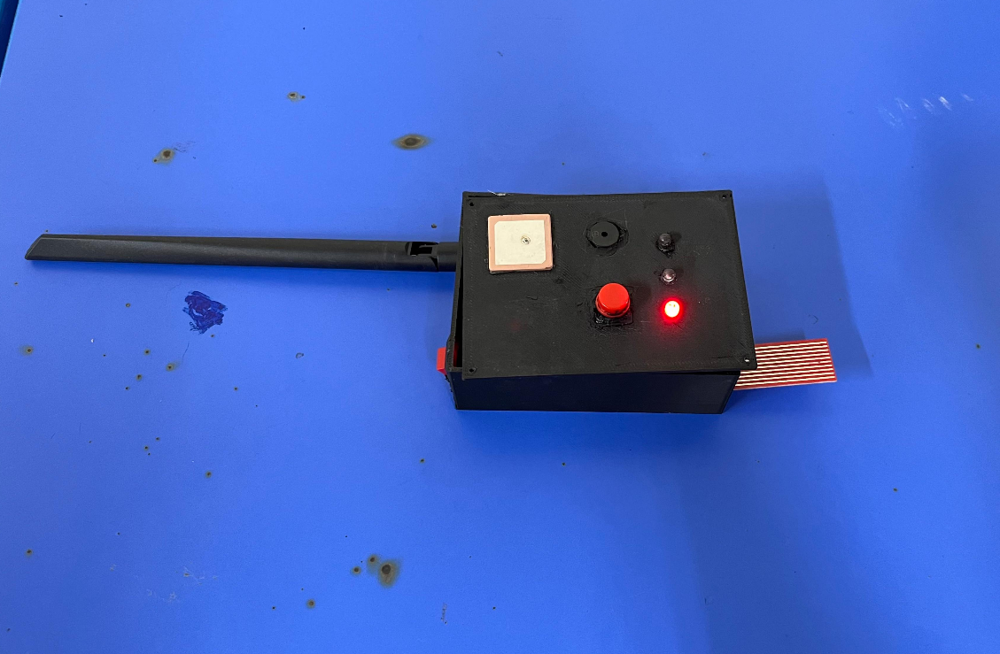

IoT Water Safety (LoRa)
LoRa • Final Year Project
- Designed an IoT-based water safety monitoring system using LoRa communication for long-range, low-power data transmission[cite: 3].
- Developed sensor node functionality using microcontrollers and implemented a heartbeat mechanism to prevent silent failures[cite: 3].
- Integrated GPS and environmental sensors to support location tracking and safety detection[cite: 3].